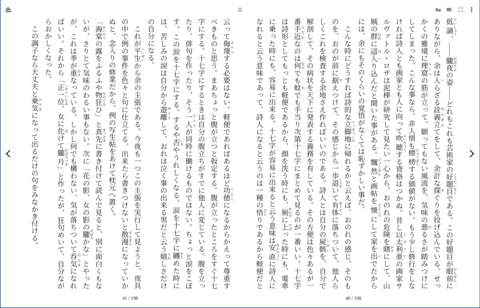
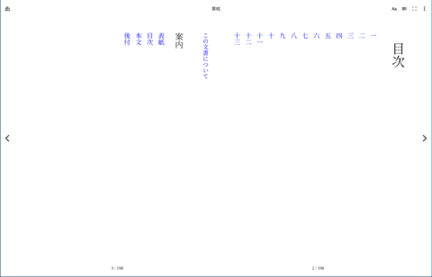

A program that uses BlinkGTK as its rendering engine: BlinkGTK-Readium, an EPUB reader, showing Natsume Soseki's Kusamakura in vertical-writing two-page spreads — ruby and emphasis dots rendered by Blink. Click any image to enlarge.
Readium (Copyright Readium Foundation、BSD-3-Clause。EDRLab が主要開発元) を基に、 日本語組版拡張を BlinkGTK プロジェクトが実装 / Based on Readium (Copyright Readium Foundation, BSD-3-Clause; principally developed by EDRLab) with Japanese-typography extensions by the BlinkGTK project. 表示コンテンツ: 夏目漱石『草枕』(底本: 青空文庫、パブリックドメイン。EPUB は総務省事業で制作された 縦書きサンプル) / Content: Kusamakura by Natsume Soseki (Aozora Bunko text, public domain; EPUB sample produced by an MIC project).
BlinkGTK でアプリケーションを作られた方へ — このギャラリーでの紹介を募集しています。
スクリーンショットや動画を
掲載募集の窓口
までお寄せください。
Built something with BlinkGTK? We would like to feature it here —
send screenshots or video to the
call for submissions.
できること / What you can do
- 縦書き・ルビ・禁則処理を含む日本語組版 — Blink の実装そのまま / Japanese typography incl. vertical writing and ruby, straight from Blink
- HTML5・CSS3・JavaScript・メディア再生 — Chromium 151 と同じ Web プラットフォーム / The same web platform as Chromium 151
- 独自 URL スキーム・JS↔C メッセージングで、Web ページをアプリの UI にする / Custom URL schemes and JS↔C messaging turn pages into app UI
- ダイアログ・ファイル選択・ダウンロードを自前 UI に差し替え / Provide your own dialogs, file choosers and downloads
- コンテンツ保護 — 電子書籍・キオスク向けにコピー・保存・印刷を禁止 / Content protection for e-book readers and kiosks
- GObject シグナルと Introspection — C のほか Python・GJS・Vala からも / GObject signals & introspection: C, Python, GJS, Vala
- Chrome DevTools でデバッグ / Debug with Chrome DevTools
目的から関数を探すには: 逆引きリファレンス · How do I…?
最小のアプリ — これで全部 / A minimal app — this is all of it
#include <blink_gtk/blink_gtk.h>
#include <gtk/gtk.h>
int main(int argc, char **argv)
{
blink_gtk_init(&argc, &argv);
gtk_init();
GtkWidget *win = gtk_window_new();
GtkWidget *view = blink_web_view_new();
gtk_window_set_child(GTK_WINDOW(win), view);
blink_web_view_load_uri(BLINK_WEB_VIEW(view), "https://example.com/");
gtk_window_present(GTK_WINDOW(win));
return blink_gtk_run_main_loop();
}ビルドは pkg-config --cflags --libs blinkgtk-0.1 を通すだけ。リソース配置を含む完全な手順は
アプリのビルドへ。
/ Build with pkg-config; the complete walkthrough is in
Building your application.
BlinkGTK は、Google Chrome と同じ Chromium / Blink レンダリングエンジンを、GTK4 アプリケーションへネイティブに組み込むための WebView エンジンです。Electron のようにブラウザ全体を同梱するのではなく、最新の Web エンジンそのものを一つの GTK ウィジェットとして扱えます。Wayland に対応し、自己描画方式で、上流の Chromium に追従して更新されます。
これにより、Linux のネイティブアプリの中で、現代的な HTML・CSS・JavaScript・メディア再生・複雑な文字組みを、本物のブラウザと同じ品質で動かせます。縦書きや禁則処理を含む日本語組版、音声と読み上げ箇所を同期させる EPUB 3 Media Overlays、DAISY 形式のアクセシブルな読書体験など、要求の厳しい用途にも応えます。
BlinkGTK は、電子出版とアクセシビリティのための参照実装 FUSEe-SMIL を支える基盤として生まれました。Web 技術をアプリへ「埋め込む」体験を一級市民にすることを目指し、W3C コミュニティグループ Embedded Web Engines & Native Web Runtimes とも連携しながら、オープンに開発を進めています(このグループに参加する)。なお、このコミュニティグループは Web 技術について議論するための場であり、BlinkGTK 製品のサポート窓口ではありません。参加の前に、グループページの説明をよくお読みください。
BlinkGTK is a WebView engine that embeds the same Chromium / Blink rendering engine found in Google Chrome directly into GTK4 applications. Instead of bundling an entire browser the way Electron does, it lets you treat a modern web engine as a single GTK widget. It is Wayland-native, self-rendering, and stays current with upstream Chromium.
This means native Linux apps can run modern HTML, CSS, JavaScript, media playback, and complex typography at the same quality as a real browser. It is built for demanding use cases: Japanese vertical writing with line-breaking rules, EPUB 3 Media Overlays that synchronize audio with highlighted text, and accessible DAISY reading experiences.
BlinkGTK began as the foundation for FUSEe-SMIL, a reference implementation for digital publishing and accessibility. Our goal is to make embedding the web a first-class experience — developed in the open, in coordination with the W3C Embedded Web Engines & Native Web Runtimes Community Group (join this group). Note that this community group is a forum for discussing web technology, not a support channel for the BlinkGTK product; please read the group's description carefully before joining.
Documentation
API リファレンス、チュートリアル、アプリのビルド手順。配布物に同梱されている ドキュメントと同一の内容で、記載されている API が同梱バイナリに実在することを 機械検証しています。
API reference, tutorials, and how to build your application. The same documentation that ships with the packages; every API named in it is mechanically verified to exist in the bundled binary.
- ドキュメント一覧 / Browse the documentation
- はじめに / Start here: アプリのビルド · Building your application
- API: リファレンス目次 · Reference index
Download
BlinkGTK v1.2.0-build3（2026-08-08 / Chromium 151.0.7922.71）
GPU 描画が環境変数の指定だけで使えるように。ウィンドウの大きさを変えても文字が二重に見えない
GPU rendering works with a single environment variable; no doubled text while resizing
ダウンロード / Download
- Fedora 44 (RPM): runtime · devel · gir
- Debian / Ubuntu (DEB): runtime · devel
- 汎用 Linux / Generic (tarball): tar.gz · tar.bz2
- 検証 / Verify: SHA256SUMS · .asc · GPG key
動作要件 / Requirements
- x86_64, glibc 2.43+（Fedora 44 / Ubuntu 25.10 or later）
- Wayland セッション必須 / Wayland session required（X11 のみの環境では動作しません / does not run under X11-only）
- GTK4（4.6+、4.22 で検証済 / verified on 4.22）
対応表 / Compatibility
| 製品 / Version | Chromium / Blink | API | 状態 / Status |
|---|---|---|---|
| v1.2.0-build3 | 151.0.7922.71 | 0.1 | 開発 / dev |
描画経路 / Render path
| 経路 / Path | 版 / Version | ホットスワップ / Hot-swap | 位置づけ / Role |
|---|---|---|---|
| BlinkGTK 標準 (software) | v1.0 | 未対応 / not yet | 既定 / 全 compositor 互換 / default, all compositors |
全リリース / All releases: github.com/daisy19gnu/blinkgtk-dist
お問い合わせ / Contact
BlinkGTK に関するお問い合わせは contact@blinkgtk.org までご連絡ください。製品での採用・PoC・受託開発のご相談は blinkgtk.com もご覧ください。
For inquiries about BlinkGTK, email contact@blinkgtk.org. For product adoption, proofs of concept, or custom development, see also blinkgtk.com.